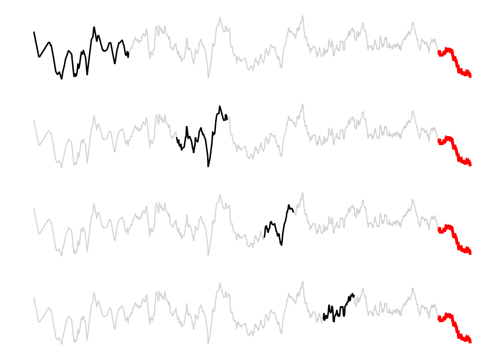

4 Testing, training, validating
In Chapter 2, we were very lucky. Because we applied an unsupervised method, we didn’t really have a target to compare to the output. Whatever classification we got, we had to live with it. It was incredibly freeing. Sadly, in most applications, we will have to compare our predictions to data, and data are incredibly vexatious. In this chapter, we will develop intuitions on the notions of training, testing, and validation; we will further think about data leakage, why it is somehow worse than it sounds, and how to protect against it.
In a sense, we started thinking about these concepts in ?sec-gradientdescent; specifically, we came up with a way to optimize the parameters of our model (i.e. of training our model) based on a series of empirical observations, and a criteria for what a “good fit” is. We further appraised the performance of our model by measuring the loss (our measure of how good the fit is) on a dataset that was not accessible during training.
4.1 How can we split a dataset?
There is a much more important question to ask first: why do we split a dataset? In a sense, answering this question echoes the discussion we started in TODO REG MOD, because the purpose of splitting a dataset is to ensure we can train and evaluate it properly, in order to deliver the best possible model.
When a model is trained, it has learned from the data, we have tuned its hyper-parameters to ensure that it learned with the best possible conditions, and we have applied a measure of performance after the entire process to communicate how well our model works. These three tasks require three different datasets, and this is the purpose of splitting our data into groups.
One of the issues when reading about splitting data is that the terminology can be muddy. For example, what constitutes a testing and validation set can largely be a matter of perspective. In many instances, testing and validation are used interchangeably, and this book is no exception. Nevertheless, it helps to settle on a few guidelines here, before going into the details of what each dataset constitutes and how to assemble it.
The training data are examples that are given to the model during the training process. This one has no ambiguities. aside from the fact that it is defined by substraction, in a sense, as whatever is left of the original data after we set aside testing and validation sets.
The testing data are used at the end of the process, to measure the performance of a trained model with tuned hyper-parameters. If the training data are the lectures, testing data are the final exam: we can measure the performance of the model on this dataset and report it as the model performance we can expect when applying the model to new data. There is a very important, chapter-long, caveat about this last point, related to the potential of information leak between datasets, which is covered in TODO LEAKAGE.
The validation data are used in-between, as part of the training process. They are (possibly) a subset of the training data that we use internally to check the performance of the model, often in order to tune its hyper-parameters, or as a way to report on the over-fitting of the model during the training process.
The difference between testing and validation is largely a difference of intent. When we want to provide an a posteriori assessment of the model performance, the dataset we use to determine this performance is a testing dataset. When we want to optimize some aspect of the model, the data we use for this are the validation data. With this high-level perspective in mind, let’s look at each of these datasets in turn.
4.1.1 Training
In data science (in applied machine learning in particular), we do fit models. We train them. This is an important difference: training is an iterative process, that we can repeat, optimize, and tweak. The outcome of training and the outcome of fitting are essentially the same (a model that is parameterized to work as well as possible on a given dataset), but it is good practice to adopt the language of a field, and the language of data science emphasizes the different practices in model training.
Training, to provide a general definition, is the action of modifying the parameters of a model, based on knowledge of the data, and the error that results from using the current parameter values. In ?sec-gradientdescent, for example, we will see how to train a linear model using the technique of gradient descent. Our focus in this chapter is not on the methods we use for training, but on the data that are required to train a model.
Training a model is a process akin to rote learning: we will present the same input, and the same expected responses, many times over, and we will find ways for the error on each response to decrease.
In order to initiate this process, we need an untrained model. Untrained, in this context, refers to a model that has not been trained on the specific problem we are addressing; the model may have been trained on a different problem (for example, we want to predict the distribution of a species based on a GLM trained on a phylogenetically related species). It is important to note that by “training the model”, what we really mean is “change the structure of the parameters until the output looks right”. For example, assuming a simple linear model like \(c(X) = \beta_0 + \beta_1X_1 + \beta_2X_2\), training this model would lead to changes in the values of \(\beta\), but not to the consideration of a new model \(c(X) = \beta_0 + \beta_1X_1 + \beta_2X_2 + \beta_3X_1X_2\). Comparing models is the point of validation, which we will address later on.
need for instances
need for responses
4.1.2 Validating
4.1.3 Testing
4.2 The problem: phenology of cherry blossom
4.3 Strategies to split data
remove testing first if needed
exhaustive
non-exhaustive
4.3.1 Holdout
The holdout method is what we used in TODO REF GRAD, in which we randomly selected some observations to be part of the validation data (which was, in practice, a testing dataset in this example), and kept the rest to serve as the training data. Holdout cross-validation is possibly the simplest technique, but it suffers from a few drawbacks.
The model is only trained for one split of the data, and similarly only evaluated for one split of the data. There is, therefore, a chance to sample a particularly bad combination of the data that lead to erroneous results. Attempts to quantify the importance of the predictors are likely to give particularly unstable results, as the noise introduced by picking a single random subset will not be smoothed out by multiple attempts.
In addition, as Hawkins, Basak, and Mills (2003) point out, holdout validation is particularly wasteful in data-limited settings, where there are fewer than hundreds of observations. The reason is that the holdout dataset will never contribute to training, and assuming the data are split 80/20, one out of five observations will not contribute to the model. Other cross-validation schemes presented in this section will allow observations to be used both for training and validation.
4.3.2 Leave-p-out
In leave-p-out cross-validation (LpOCV), starting from a dataset on \(n\) observation, we pick \(p\) at random to serve as validation data, and \(n-p\) to serve as the training dataset. This process is then repeated exhaustively, which is to say we split the dataset in every possible way that gives \(p\) and \(n-p\) observations, for a set value of \(p\). The model is then trained on the \(n-p\) observations, and validated on the \(p\) observations for validation, and the performance (or loss) is averaged to give the model performance before testing.
Celisse (2014) points out that \(p\) has to be large enough (relative to the sample size \(n\)) to overcome the propensity of the model to overfit on a small training dataset. One issue with LpOCV is that the number of combinations is potentially very large. It is, in fact, given by the binomial coefficent \(\binom{n}{p}\), which gets unreasonably large even for small datasets. For example, running LpOCV on \(n=150\) observations, leaving out \(p=10\) for validation everytime, would require to train the model about \(10^{15}\) times. Assuming we can train the model in \(10^{-3}\) seconds, the entire process would require 370 centuries.
Oh well.
4.3.3 Leave-one-out
The leave-one-out cross-validation (LOCCV) is a special case of LpOCV with \(p=1\). Note that it is a lot faster to run than LpOCV, because \(\binom{n}{1}=n\), and so the validation step runs in \(\mathcal{O}(n)\) (LpOCV runs in \(\mathcal{O}(n!)\)). LOOCV is also an exhaustive cross-validation technique, as every possible way to split the dataset will be used for training and evaluation.